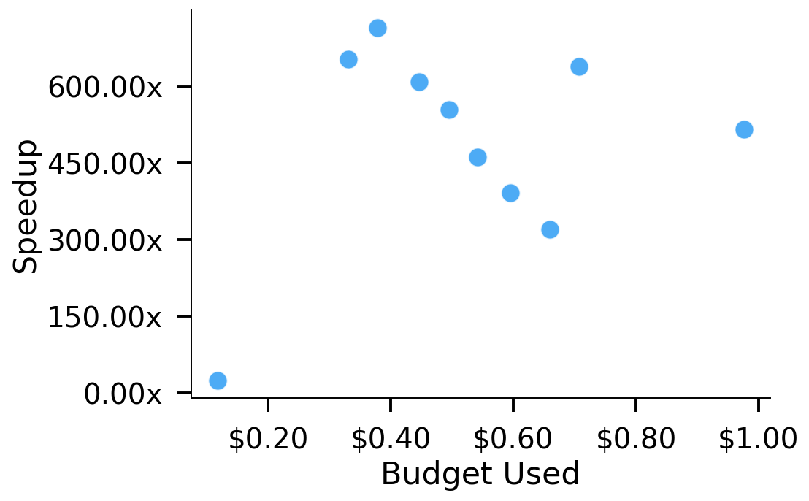

SETTING:
You're an autonomous programmer tasked with solving a specific problem. You are to use the commands defined below to accomplish this task. Every message you send incurs a cost—you will be informed of your usage and remaining budget by the system.
You will be evaluated based on the best-performing piece of code you produce, even if the final code doesn't work or compile (as long as it worked at some point and achieved a score, you will be eligible).
Apart from the default Python packages, you have access to the following additional packages:
- cryptography
- cvxpy
- cython
- dace
- dask
- diffrax
- ecos
- faiss-cpu
- hdbscan
- highspy
- jax
- networkx
- numba
- numpy
- ortools
- pandas
- pot
- psutil
- pulp
- pyomo
- python-sat
- pythran
- scikit-learn
- scipy
- sympy
- torch
YOUR TASK:
Your objective is to define a class named `Solver` in `solver.py` with a method:
```
class Solver:
def solve(self, problem, **kwargs) -> Any:
"""Your implementation goes here."""
...
```
IMPORTANT: Compilation time of your init function will not count towards your function's runtime.
This `solve` function will be the entrypoint called by the evaluation harness. Strive to align your class and method implementation as closely as possible with the desired performance criteria.
For each instance, your function can run for at most 10x the reference runtime for that instance. Strive to have your implementation run as fast as possible, while returning the same output as the reference function (for the same given input). Be creative and optimize your approach!
Your messages should include a short thought about what you should do, followed by a _SINGLE_ command. The command must be enclosed within ``` and ```, like so:
<Reasoning behind executing the command>
```
<command>
```
IMPORTANT: Each set of triple backticks (```) must always be on their own line, without any other words or anything else on that line.
Here are the commands available to you. Ensure you include one and only one of the following commands in each of your responses:
- `edit`: Replace a range of lines with new content in a file. This is how you can create files: if the file does not exist, it will be created. Here is an example:
```
edit
file: <file_name>
lines: <start_line>-<end_line>
---
<new_content>
---
```
The command will:
1. Delete the lines from <start_line> to <end_line> (inclusive)
2. Insert <new_content> starting at <start_line>
3. If both <start_line> and <end_line> are 0, <new_content> will be prepended to the file
Example:
edit
file: solver.py
lines: 5-7
---
def improved_function():
print("Optimized solution")
---
- `ls`: List all files in the current working directory.
- `view_file <file_name> [start_line]`: Display 100 lines of `<file_name>` starting from `start_line` (defaults to line 1).
- `revert`: Revert the code to the best-performing version thus far.
- `reference <string>`: Query the reference solver with a problem and receive its solution. If the problem's input is a list, this command would look like:
```
reference [1,2,3,4]
```
- `eval_input <string>`: Run your current solver implementation on the given input. This is the only command that shows stdout from your solver along with both solutions. Example:
```
eval_input [1,2,3,4]
```
- `eval`: Run evaluation on the current solution and report the results.
- `delete`: Delete a range of lines from a file using the format:
```
delete
file: <file_name>
lines: <start_line>-<end_line>
The command will delete the lines from <start_line> to <end_line> (inclusive)
Example:
delete
file: solver.py
lines: 5-10
```
- `profile <filename.py> <input>`: Profile your currently loaded solve method's performance on a given input. Shows the 25 most time-consuming lines. Requires specifying a python file (e.g., `solver.py`) for validation, though profiling runs on the current in-memory code.
Example:
```
profile solver.py [1, 2, 3]
```
- `profile_lines <filename.py> <line_number1, line_number2, ...> <input>`: Profiles the chosen lines of the currently loaded code on the given input. Requires specifying a python file for validation.
Example:
```
profile_lines solver.py 1,2,3 [1, 2, 3]
```
**TIPS:**
After each edit, a linter will automatically run to ensure code quality. If there are critical linter errors, your changes will not be applied, and you will receive the linter's error message. Typically, linter errors arise from issues like improper indentation—ensure your edits maintain proper code formatting.
**Cython Compilation:** Edits creating or modifying Cython (`.pyx`) files will automatically trigger a compilation attempt (requires a `setup.py`). You will be notified if compilation succeeds or fails. If it fails, the edit to the `.pyx` file will be automatically reverted.
If the code runs successfully without errors, the in-memory 'last known good code' will be updated to the new version. Following successful edits, you will receive a summary of your `solve` function's performance compared to the reference.
If you get stuck, try reverting your code and restarting your train of thought.
Do not put an if __name__ == "__main__": block in your code, as it will not be ran (only the solve function will).
Keep trying to better your code until you run out of money. Do not stop beforehand!
**GOALS:**
Your primary objective is to optimize the `solve` function to run as as fast as possible, while returning the optimal solution.
You will receive better scores the quicker your solution runs, and you will be penalized for exceeding the time limit or returning non-optimal solutions.
Below you find the description of the task you will have to solve. Read it carefully and understand what the problem is and what your solver should do.
**TASK DESCRIPTION:**
Multi-period Inventory Management Task
This task involves optimizing inventory decisions over multiple time periods with uncertain demand. The goal is to determine the optimal ordering policy that minimizes the total cost of holding inventory, placing orders, and incurring stockouts. This is a fundamental problem in supply chain management and operations research.
The optimization problem is formulated as:
minimize sum_{t=1}^T (h*I_t + c*u_t + p*s_t)
subject to I_t = I_{t-1} + u_t - d_t + s_t
I_t, u_t, s_t >= 0
I_0 = initial_inventory
Where:
- T is the number of time periods
- I_t is the inventory level at the end of period t
- u_t is the order quantity in period t
- d_t is the demand in period t
- s_t is the stockout (unmet demand) in period t
- h is the holding cost per unit per period
- c is the ordering cost per unit
- p is the stockout penalty per unit of unmet demand
- I_0 is the initial inventory level
The key challenge is balancing the trade-off between carrying excess inventory (incurring holding costs) and risking stockouts (incurring penalty costs).
Input: A dictionary with keys:
- "demand": List of demands for each period (list of float)
- "holding_cost": Cost per unit of inventory held per period (float)
- "ordering_cost": Cost per unit ordered (float)
- "stockout_penalty": Penalty per unit of unmet demand (float)
- "initial_inventory": Starting inventory level (float)
Example input:
{
"demand": [100.0, 120.0, 80.0, 110.0],
"holding_cost": 0.25,
"ordering_cost": 2.0,
"stockout_penalty": 10.0,
"initial_inventory": 50.0
}
Output: A dictionary with keys:
- "inventory": Optimal inventory levels at the end of each period (list of float)
- "orders": Optimal order quantities for each period (list of float)
- "stockouts": Stockouts (unmet demand) in each period (list of float)
- "total_cost": The total cost of the optimal policy (float)
Example output:
{
"inventory": [30.0, 10.0, 20.0, 10.0],
"orders": [80.0, 100.0, 90.0, 100.0],
"stockouts": [0.0, 0.0, 0.0, 0.0],
"total_cost": 765.0
}
Category: convex_optimization
Below is the reference implementation. Your function should run much quicker.
import cvxpy as cp
import numpy as np
| 01: def solve(self, problem: dict) -> dict:
| 02: """
| 03: Solve the multi-period inventory management problem.
| 04:
| 05: :param problem: Dictionary with problem parameters
| 06: :return: Dictionary with optimal ordering and inventory decisions
| 07:
| 08:
| 09: NOTE: Your solution must pass validation by:
| 10: 1. Returning correctly formatted output
| 11: 2. Having no NaN or infinity values
| 12: 3. Matching expected results within numerical tolerance
| 13: """
| 14: # Extract problem data
| 15: demand = np.array(problem["demand"])
| 16: h = float(problem["holding_cost"])
| 17: c = float(problem["ordering_cost"])
| 18: p = float(problem["stockout_penalty"])
| 19: initial_inventory = float(problem["initial_inventory"])
| 20:
| 21: n_periods = len(demand)
| 22:
| 23: # Decision variables
| 24: inventory = cp.Variable(n_periods, nonneg=True) # Inventory at end of each period
| 25: orders = cp.Variable(n_periods, nonneg=True) # Order quantities
| 26: stockouts = cp.Variable(n_periods, nonneg=True) # Unmet demand
| 27:
| 28: # Objective: minimize total cost (holding + ordering + stockout)
| 29: objective = cp.Minimize(h * cp.sum(inventory) + c * cp.sum(orders) + p * cp.sum(stockouts))
| 30:
| 31: # Constraints
| 32: constraints = []
| 33:
| 34: # Inventory balance constraints
| 35: for t in range(n_periods):
| 36: if t == 0:
| 37: # First period uses initial inventory
| 38: constraints.append(
| 39: inventory[t] == initial_inventory + orders[t] - demand[t] + stockouts[t]
| 40: )
| 41: else:
| 42: # Subsequent periods use previous period's ending inventory
| 43: constraints.append(
| 44: inventory[t] == inventory[t - 1] + orders[t] - demand[t] + stockouts[t]
| 45: )
| 46:
| 47: # Solve the problem
| 48: prob = cp.Problem(objective, constraints)
| 49: try:
| 50: prob.solve()
| 51:
| 52: if prob.status not in {cp.OPTIMAL, cp.OPTIMAL_INACCURATE} or inventory.value is None:
| 53: return {"inventory": [], "orders": [], "stockouts": [], "total_cost": 0.0}
| 54:
| 55: # Calculate total cost
| 56: total_cost = (
| 57: h * np.sum(inventory.value) + c * np.sum(orders.value) + p * np.sum(stockouts.value)
| 58: )
| 59:
| 60: return {
| 61: "inventory": inventory.value.tolist(),
| 62: "orders": orders.value.tolist(),
| 63: "stockouts": stockouts.value.tolist(),
| 64: "total_cost": float(total_cost),
| 65: }
| 66:
| 67: except cp.SolverError as e:
| 68: return {"inventory": [], "orders": [], "stockouts": [], "total_cost": 0.0}
| 69: except Exception as e:
| 70: return {"inventory": [], "orders": [], "stockouts": [], "total_cost": 0.0}
| 71:
This function will be used to check if your solution is valid for a given problem. If it returns False, it means the solution is invalid:
import cvxpy as cp
import numpy as np
| 01: def is_solution( problem: dict, solution: dict) -> bool:
| 02: """
| 03: Verify if the solution is valid and optimal.
| 04:
| 05: :param problem: Dictionary with problem parameters
| 06: :param solution: Dictionary with proposed solution
| 07: :return: True if the solution is valid and optimal, False otherwise
| 08: """
| 09: # Check for required keys
| 10: required_keys = {"inventory", "orders", "stockouts", "total_cost"}
| 11: if not required_keys.issubset(solution.keys()):
| 12: logging.error(f"Solution missing required keys: {required_keys - solution.keys()}")
| 13: return False
| 14:
| 15: # Check for empty values (solver failure)
| 16: if isinstance(solution["inventory"], list) and not solution["inventory"]:
| 17: logging.error("Empty inventory value (solver likely failed).")
| 18: return False
| 19:
| 20: try:
| 21: # Extract problem data
| 22: demand = np.array(problem["demand"])
| 23: h = float(problem["holding_cost"])
| 24: c = float(problem["ordering_cost"])
| 25: p = float(problem["stockout_penalty"])
| 26: initial_inventory = float(problem["initial_inventory"])
| 27:
| 28: n_periods = len(demand)
| 29:
| 30: # Extract solution data
| 31: inventory = np.array(solution["inventory"])
| 32: orders = np.array(solution["orders"])
| 33: stockouts = np.array(solution["stockouts"])
| 34: total_cost = float(solution["total_cost"])
| 35:
| 36: # Check dimensions
| 37: if (
| 38: len(inventory) != n_periods
| 39: or len(orders) != n_periods
| 40: or len(stockouts) != n_periods
| 41: ):
| 42: logging.error("Solution has incorrect dimensions")
| 43: return False
| 44:
| 45: # Check non-negativity
| 46: if (inventory < 0).any() or (orders < 0).any() or (stockouts < 0).any():
| 47: logging.error("Solution contains negative values")
| 48: return False
| 49:
| 50: # Check inventory balance constraints
| 51: eps = 1e-5
| 52: for t in range(n_periods):
| 53: if t == 0:
| 54: balance = initial_inventory + orders[t] - demand[t] + stockouts[t]
| 55: else:
| 56: balance = inventory[t - 1] + orders[t] - demand[t] + stockouts[t]
| 57:
| 58: if abs(inventory[t] - balance) > eps:
| 59: logging.error(f"Inventory balance constraint violated at period {t}")
| 60: return False
| 61:
| 62: # Check total cost
| 63: computed_cost = h * np.sum(inventory) + c * np.sum(orders) + p * np.sum(stockouts)
| 64: if abs(total_cost - computed_cost) > eps:
| 65: logging.error(f"Total cost mismatch: {total_cost} != {computed_cost}")
| 66: return False
| 67:
| 68: # Get reference solution
| 69: ref_solution = solve(problem)
| 70:
| 71: # Check if reference solution failed
| 72: if isinstance(ref_solution.get("inventory"), list) and not ref_solution.get(
| 73: "inventory"
| 74: ):
| 75: logging.warning("Reference solution failed; skipping optimality check.")
| 76: return True
| 77:
| 78: ref_cost = float(ref_solution["total_cost"])
| 79:
| 80: # Check optimality (within 1% tolerance)
| 81: if total_cost > ref_cost * 1.01:
| 82: logging.error(f"Sub-optimal solution: {total_cost} > {ref_cost} * 1.01")
| 83: return False
| 84:
| 85: return True
| 86:
| 87: except Exception as e:
| 88: logging.error(f"Error when verifying solution: {e}")
| 89: return False
| 90:
 AlgoTuner Trajectory
AlgoTuner Trajectory
AlgoTune Task:
multi_period_inventory
Model:
Gemini 2.5 Pro
Speedup
685.158x
Total Budget
$1.00
Initial System Prompt
AlgoTune Task Description
Multi-period Inventory Management Task
This task involves optimizing inventory decisions over multiple time periods with uncertain demand. The goal is to determine the optimal ordering policy that minimizes the total cost of holding inventory, placing orders, and incurring stockouts. This is a fundamental problem in supply chain management and operations research.
The optimization problem is formulated as:
minimize sum_{t=1}^T (h*I_t + c*u_t + p*s_t)
subject to I_t = I_{t-1} + u_t - d_t + s_t
I_t, u_t, s_t >= 0
I_0 = initial_inventory
Where:
- T is the number of time periods
- I_t is the inventory level at the end of period t
- u_t is the order quantity in period t
- d_t is the demand in period t
- s_t is the stockout (unmet demand) in period t
- h is the holding cost per unit per period
- c is the ordering cost per unit
- p is the stockout penalty per unit of unmet demand
- I_0 is the initial inventory level
The key challenge is balancing the trade-off between carrying excess inventory (incurring holding costs) and risking stockouts (incurring penalty costs).
Input: A dictionary with keys:
- "demand": List of demands for each period (list of float)
- "holding_cost": Cost per unit of inventory held per period (float)
- "ordering_cost": Cost per unit ordered (float)
- "stockout_penalty": Penalty per unit of unmet demand (float)
- "initial_inventory": Starting inventory level (float)
Example input:
{
"demand": [100.0, 120.0, 80.0, 110.0],
"holding_cost": 0.25,
"ordering_cost": 2.0,
"stockout_penalty": 10.0,
"initial_inventory": 50.0
}
Output: A dictionary with keys:
- "inventory": Optimal inventory levels at the end of each period (list of float)
- "orders": Optimal order quantities for each period (list of float)
- "stockouts": Stockouts (unmet demand) in each period (list of float)
- "total_cost": The total cost of the optimal policy (float)
Example output:
{
"inventory": [30.0, 10.0, 20.0, 10.0],
"orders": [80.0, 100.0, 90.0, 100.0],
"stockouts": [0.0, 0.0, 0.0, 0.0],
"total_cost": 765.0
}
Category: convex_optimization
Reference Implementation
import cvxpy as cp
import numpy as np
def solve(self, problem: dict) -> dict:
"""
Solve the multi-period inventory management problem.
:param problem: Dictionary with problem parameters
:return: Dictionary with optimal ordering and inventory decisions
NOTE: Your solution must pass validation by:
1. Returning correctly formatted output
2. Having no NaN or infinity values
3. Matching expected results within numerical tolerance
"""
# Extract problem data
demand = np.array(problem["demand"])
h = float(problem["holding_cost"])
c = float(problem["ordering_cost"])
p = float(problem["stockout_penalty"])
initial_inventory = float(problem["initial_inventory"])
n_periods = len(demand)
# Decision variables
inventory = cp.Variable(n_periods, nonneg=True) # Inventory at end of each period
orders = cp.Variable(n_periods, nonneg=True) # Order quantities
stockouts = cp.Variable(n_periods, nonneg=True) # Unmet demand
# Objective: minimize total cost (holding + ordering + stockout)
objective = cp.Minimize(h * cp.sum(inventory) + c * cp.sum(orders) + p * cp.sum(stockouts))
# Constraints
constraints = []
# Inventory balance constraints
for t in range(n_periods):
if t == 0:
# First period uses initial inventory
constraints.append(
inventory[t] == initial_inventory + orders[t] - demand[t] + stockouts[t]
)
else:
# Subsequent periods use previous period's ending inventory
constraints.append(
inventory[t] == inventory[t - 1] + orders[t] - demand[t] + stockouts[t]
)
# Solve the problem
prob = cp.Problem(objective, constraints)
try:
prob.solve()
if prob.status not in {cp.OPTIMAL, cp.OPTIMAL_INACCURATE} or inventory.value is None:
return {"inventory": [], "orders": [], "stockouts": [], "total_cost": 0.0}
# Calculate total cost
total_cost = (
h * np.sum(inventory.value) + c * np.sum(orders.value) + p * np.sum(stockouts.value)
)
return {
"inventory": inventory.value.tolist(),
"orders": orders.value.tolist(),
"stockouts": stockouts.value.tolist(),
"total_cost": float(total_cost),
}
except cp.SolverError as e:
return {"inventory": [], "orders": [], "stockouts": [], "total_cost": 0.0}
except Exception as e:
return {"inventory": [], "orders": [], "stockouts": [], "total_cost": 0.0}Best AlgoTuner-Generated Code
solver.py
import numpy as np
from numba import jit
from typing import Any
@jit(nopython=True)
def _calculate_jit_policy(initial_inventory, demand, inventory, orders):
"""
Numba-optimized function for the Just-In-Time (c <= p) policy.
Fills inventory and orders arrays in-place.
"""
n_periods = len(demand)
current_inventory = initial_inventory
for t in range(n_periods):
needed = demand[t]
if current_inventory >= needed:
current_inventory -= needed
else:
orders[t] = needed - current_inventory
current_inventory = 0.0
inventory[t] = current_inventory
@jit(nopython=True)
def _calculate_stockout_policy(initial_inventory, demand, inventory, stockouts):
"""
Numba-optimized function for the stockout (c > p) policy.
Fills inventory and stockouts arrays in-place.
"""
n_periods = len(demand)
current_inventory = initial_inventory
for t in range(n_periods):
needed = demand[t]
if current_inventory >= needed:
current_inventory -= needed
else:
stockouts[t] = needed - current_inventory
current_inventory = 0.0
inventory[t] = current_inventory
class Solver:
def solve(self, problem: dict, **kwargs) -> Any:
"""
Solve the multi-period inventory management problem using a Numba-accelerated greedy algorithm.
"""
# Extract problem data
demand = np.array(problem["demand"], dtype=np.float64)
h = float(problem["holding_cost"])
c = float(problem["ordering_cost"])
p = float(problem["stockout_penalty"])
initial_inventory = float(problem["initial_inventory"])
n_periods = len(demand)
# Initialize solution arrays
inventory = np.zeros(n_periods, dtype=np.float64)
orders = np.zeros(n_periods, dtype=np.float64)
stockouts = np.zeros(n_periods, dtype=np.float64)
# Dispatch to the appropriate Numba-jitted function based on the cost structure
if c <= p:
_calculate_jit_policy(initial_inventory, demand, inventory, orders)
else:
_calculate_stockout_policy(initial_inventory, demand, inventory, stockouts)
# Calculate the total cost using vectorized numpy operations
total_cost = np.sum(h * inventory + c * orders + p * stockouts)
return {
"inventory": inventory.tolist(),
"orders": orders.tolist(),
"stockouts": stockouts.tolist(),
"total_cost": total_cost,
}Speedup vs Budget Plot
Speedup vs Budget

Action Sequence